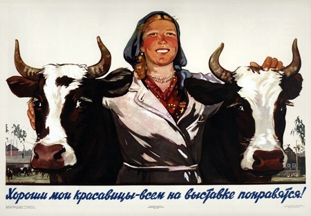

Начиная с конца 1944 года, из Эстонии, Латвии, Финляндии начинает возвращаться население района, насильно перемещенное немцами в 1943 году.
Последние жилы вытягиваются на преодоление послевоенной разрухи. Нe вернувшееся с войны поколение мужчин в тяжелом крестьянском труде заменяют женщины.
В 1946-1947 годах в стране разразился массовый голод, который унес до двух миллионов жизней народа-победителя. Причиной называют пресловутую послевоенную разруху, неурожай 1946 года и необходимость экспорта зерна.
Следствием стали катастрофические демографические и социальные изменения. В частности, в районе появилось множество переселенцев из Псковской и Курской областей. Результатом стало появление в районе нового крупного населенного пункта - Курск.
Открываются школы, больницы, начинается восстановление разоренного и уничтоженного войной.
В 1953 году заканчивается бесчеловечная сталинская эпоха. На смену приходит хрущевская оттепель - самая счастливая пора для поколения советских людей второй половины XX века. Не потому, что стало сытнее. Потому, что жизнь начала меняться от тьмы к свету.